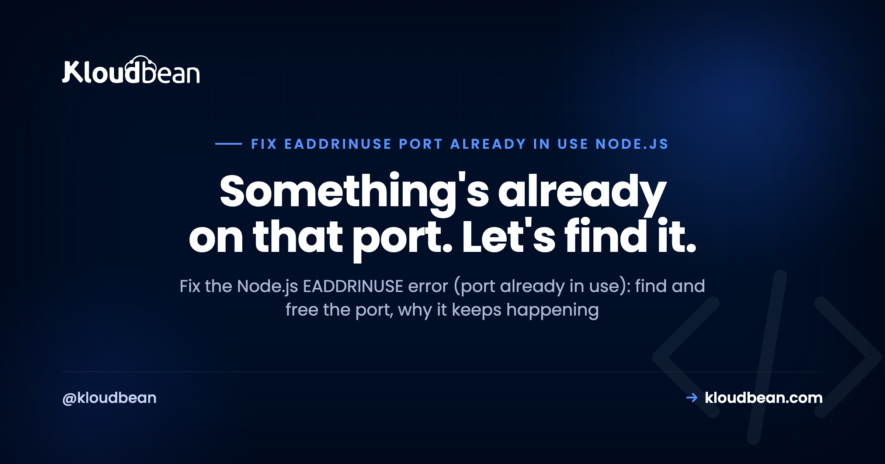
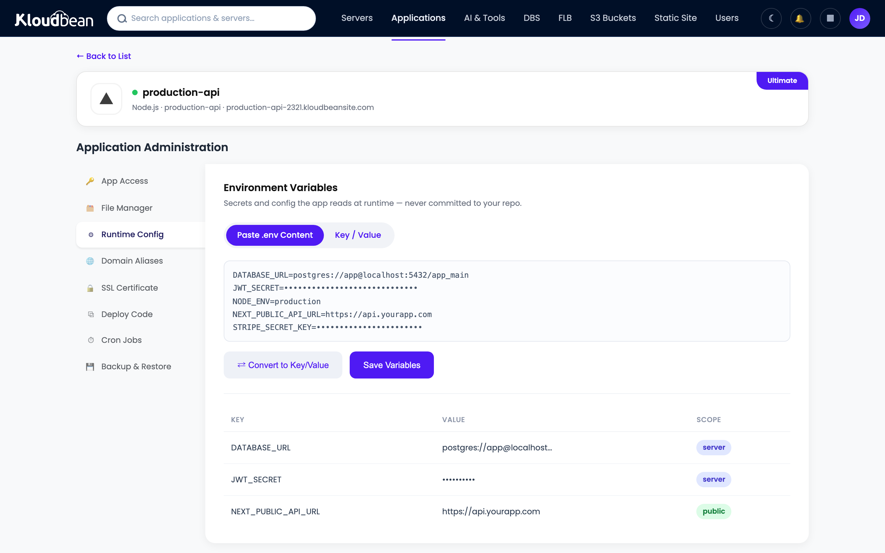

Fix EADDRINUSE: "port already in use" in Node.js

You run npm start and Node quits with Error: listen EADDRINUSE: address already in use :::3000. The EADDRINUSE error means something already holds the port your app wants, so the OS refuses to hand it over. Nine times out of ten it's a stray copy of your own app that never shut down. This guide shows you how to find and free the port in seconds, and then how to stop it happening again, in development and in production.
Find what's holding the port and stop it. On macOS or Linux: lsof -i :3000 to see the process, then kill -9 <PID>. Or one shot with npx kill-port 3000. If it keeps coming back, the cause is usually a previous instance that never exited, a dev watcher starting twice, or two processes told to use the same port. The durable fix is to bind to the port your platform gives you (process.env.PORT), run one process per port, and close the server cleanly on shutdown.
What EADDRINUSE actually means
A TCP port can belong to exactly one listening process at a time. When your app calls app.listen(3000), it asks the OS for port 3000. If another process already has it, the OS returns EADDRINUSE (error, address in use) and Node throws. The full line looks like this:
Error: listen EADDRINUSE: address already in use :::3000
at Server.setupListenHandle [as _listen2] (node:net:1817:16)
at listenInCluster (node:net:1865:12)So the message is literal. It isn't a bug in your code so much as a conflict: two things want the same door. The fix is either to evict whoever's there, or to send your app to a different door.
Find and free the port
First, see what's holding it. On macOS and Linux, lsof lists the process on a port:
# who is on port 3000?
lsof -i :3000
# COMMAND PID USER ... NAME
# node 48213 you ... *:3000 (LISTEN)
# stop it
kill -9 48213The fastest one-liner, no PID hunting, is the kill-port helper:
npx kill-port 3000On Windows the same idea, different tools: find the PID with netstat -ano | findstr :3000, then taskkill /PID <PID> /F. Once the port is free, start your app again and it binds cleanly.
If you don't actually need that specific port, the other quick escape is to change ports. Set one via an environment variable so you're not editing code:
PORT=3001 npm startWhy it keeps happening
Killing the process clears the symptom. If EADDRINUSE comes back every day, one of these is the real reason.
A previous instance never exited. You hit Ctrl+C but the process detached, or it crashed in a way that left the port held for a moment, or a debugger kept it alive. The old app is still bound to 3000 while you start a new one.
Your dev watcher starts the app twice. nodemon or a bad npm script can spawn two copies, and the second one hits EADDRINUSE against the first. A restart loop that logs the error over and over is the classic tell.
Two processes are told to use the same port. An API and a worker that both default to 3000, or two PM2 apps with the same port, will collide. Give each its own port.
You call listen twice. Importing the server file in a test, or calling app.listen() in two places, binds the port more than once in the same process. Bind in exactly one entry point.
PM2 or systemd is already running it. On a server, your process manager may already have the app up on that port. You then SSH in, run node server.js by hand, and collide with the copy PM2 is already running.
Symptom to cause, fast
| What you see | Likely cause | Fix |
|---|---|---|
| Error on every restart in dev | Old instance still bound | npx kill-port 3000, then start |
| Two logs, one crashes | Watcher started the app twice | Fix the npm script / nodemon config |
| Fails only after a crash | No clean shutdown, port held | Close the server on SIGTERM/SIGINT |
| Fails on the server, not locally | PM2 already running it | Don't also start it by hand; use pm2 restart |
| Two services collide | Same port for both | Give each its own port via env |
Close the server so the port frees
A big source of repeat EADDRINUSE is a process that dies without letting go of the port. Handle the shutdown signals and close the server, so the next start finds the door open:
const server = app.listen(process.env.PORT || 3000);
for (const sig of ["SIGTERM", "SIGINT"]) {
process.on(sig, () => {
server.close(() => process.exit(0)); // stop listening, then exit
});
}This is the same habit that gives you clean, zero-downtime restarts. Bonus: it makes your app a good citizen under PM2 and any platform that stops it with SIGTERM.
The production version of this problem
In production, EADDRINUSE usually means one thing: you started a second copy of an app that was already running. The fixes are boring and reliable.
Bind to the port you're given. Never hardcode a port on a server. Read it from the environment, so the platform decides and nothing collides: const port = process.env.PORT || 3000;. Keep that value in your environment variables, not in code. Hardcoding 80 or 443 trades this error for a different one, since ports below 1024 need privileges a normal app user doesn't have, which is why listen EACCES permission denied shows up instead.
Let one thing own the process. If PM2 or systemd runs your app, let it. Use pm2 restart app instead of SSHing in and running node server.js next to the copy PM2 already has up. One owner per port, always.
This is where a managed platform quietly removes the whole class of problem. On Kloudbean your Node app is deployed from GitHub and run under PM2 for you, bound to the port the platform assigns, as a single managed process. You don't hand-start a second copy over SSH, so the "two apps, one port" collision that causes most production EADDRINUSE just doesn't come up. Restarts go through the dashboard or a git push, cleanly.

PORT here instead of hardcoding one, and the collision disappears.EADDRINUSE and the rest of the stack
Ports, processes, and clean restarts are the same story. Go deeper with the PM2 process manager guide, keep your port out of code with environment variables done right, and make restarts seamless with zero-downtime deployments. Deciding where to run the app? Where to deploy a Node.js app covers the options, and deploy a Node app to a managed cloud is the hands-on version.
Run your Node app as one clean managed process.
Deploy from GitHub, let PM2 run it on the assigned port, and restart from the dashboard instead of fighting stray processes over SSH. Start free at kloudbean.com, see plans on pricing.
Deploy from GitHub · PM2 process management · Clean restarts · Environment variables in the UI · Free migration
FAQ
What does EADDRINUSE mean in Node.js?
It means the port your app tried to listen on is already taken by another process, so the operating system refused the request and Node threw. A TCP port can only belong to one listening process at a time. The message names the port, for example :::3000, so you know exactly which one to free.
How do I find what's using a port?
On macOS or Linux, run lsof -i :3000 to see the process and its PID, then kill -9 <PID>. On Windows, use netstat -ano | findstr :3000 and taskkill /PID <PID> /F. The shortcut for any platform is npx kill-port 3000, which finds and stops it in one step.
How do I kill the process on a port quickly?
The fastest way is npx kill-port 3000, which needs no PID lookup. If you prefer built-in tools, combine lsof and kill: kill -9 $(lsof -t -i:3000) on macOS or Linux. After the port is free, start your app again and it will bind normally.
Why does EADDRINUSE keep coming back?
Usually a previous instance never fully exited, a dev watcher is starting the app twice, or two services share the same port. On a server it's often that PM2 already runs the app and you started a second copy by hand. Close the server on shutdown signals, run one process per port, and restart through your process manager.
How do I change the port my Node app uses?
Read the port from an environment variable instead of hardcoding it: const port = process.env.PORT || 3000;. Then start with a different value when you need to, like PORT=3001 npm start. In production, let the platform set PORT so nothing collides, and keep the value in your environment configuration, not in source.
Does EADDRINUSE mean my code is broken?
Not usually. It's an environment conflict, not a logic bug: two processes want the same port. The exception is calling app.listen() more than once in the same process, for example importing your server file in a test. Bind the port in exactly one entry point and that case goes away.
How do I avoid EADDRINUSE in production?
Bind to the port the platform assigns via process.env.PORT, run the app as a single process under a manager like PM2, and never hand-start a second copy next to the one already running. Restart with pm2 restart or a redeploy. A managed host that runs one process on the assigned port removes the collision entirely.